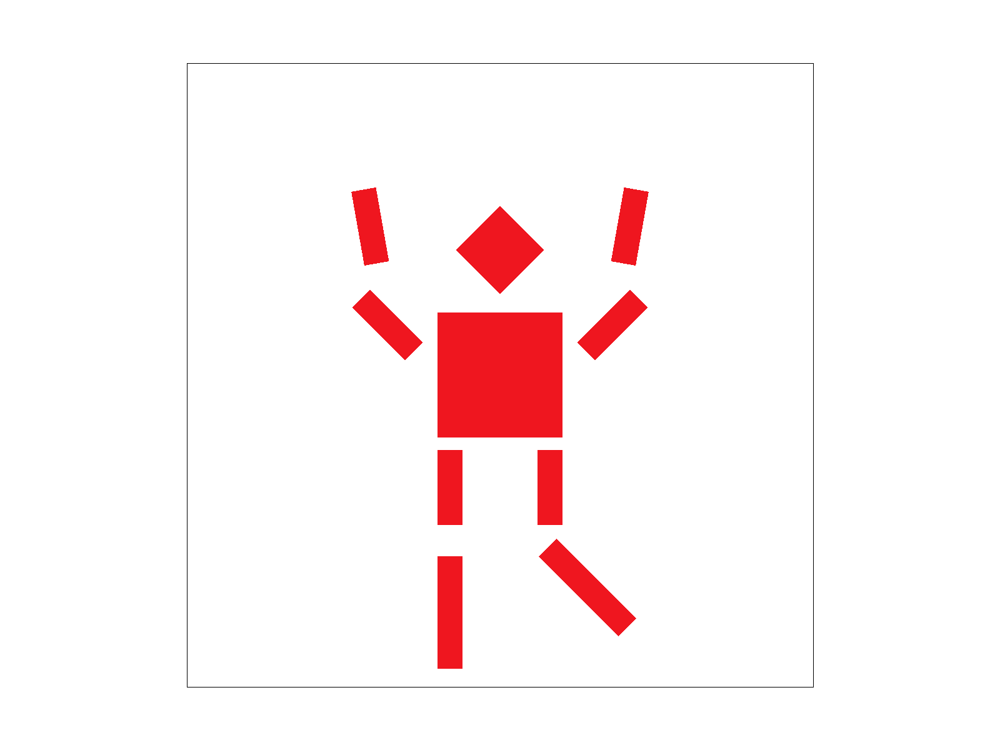
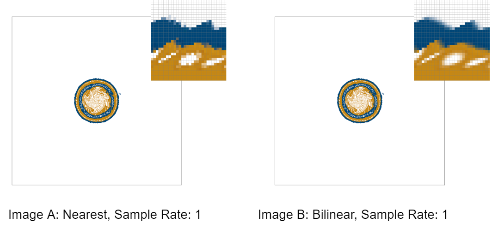
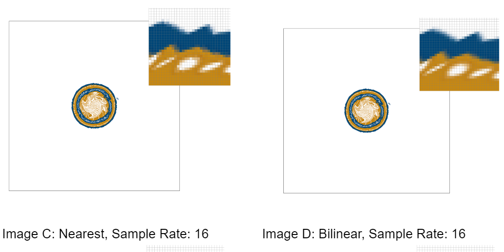
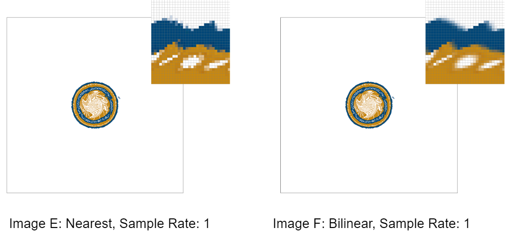
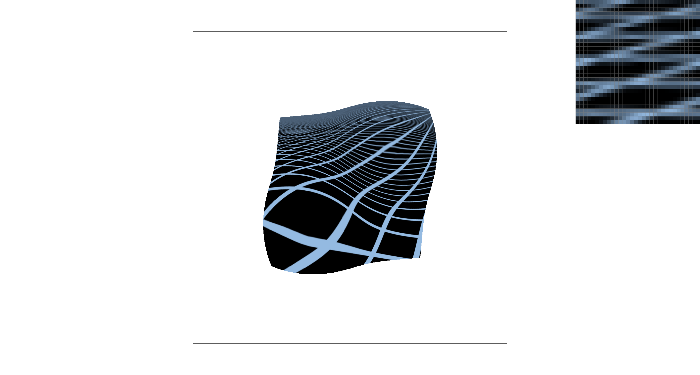

CS184/284A Spring 2025 Homework 1 Write-Up
Names: Mateus Ikezaki and Hima Kolavennu
Link to webpage: https://cal-cs184-student.github.io/hw-webpages-bloom-boomers-1/hw1/index.html
Link to GitHub repository: https://github.com/cal-cs184-student/sp25-hw1-bloom-boomers
Overview
In this homework we practiced primarily Antialiasing techniques discussed in lecture. We implemented triangle rasterizing algorithms, as well as sampling methods such as supersampling, pixel sampling and level sampling. We also implemented transformation matrices. As digital artists, it was very intersting to implement resizing techniques that are so common in our usual workflow.Task 1: Drawing Single-Color Triangles
We largely followed the pseudo-code provided in the lecture; therefore, our algorithm assumes that the vertices are given in a counterclockwise direction.
- We wrote a function named
get_counterclockwise_order, which:- Takes in all vertices’ coordinates.
- Computes the cross product between the edges connected to point 0 (from point 0 to point 1 and the edge from point 0 to point 2).
- If the cross product is negative, the order is clockwise, so we return the reversed order of the coordinates.
- If positive, the order is counterclockwise, and we return the coordinates as they were.
- Next, we determine the bounding box.
- We iterate through each pixel within the bounding box and compute \( L(x + 0.5, y + 0.5) \) for each vertex:
\( L_i = -(x - X_i) \cdot dY_i + (y - Y_i) \cdot dX_i \)
Where:- \( dX_i = X_{i+1} - X_i \)
- \( dY_i = Y_{i+1} - Y_i \)
- \( X_i \) and \( Y_i \) are the x and y coordinates of a particular vertex.
- If all \( L_i \)'s are greater than or equal to 0, then we call:
fill_pixel(floor(x + 0.5f), floor(y + 0.5f), color)
because that means the pixel is within the triangle or on one of its edges. - Our algorithm is essentially the same as the one described in the prompt:
- We compute the bounding box by calculating the minimum and maximum x and y values of the given vertices.
- Using these values, we iterate from the lowest x and y value to the highest.
- For each sample point within the bounding box, we check if the point falls inside the triangle.
- If it does, we color it.
Task 2: Antialiasing by Supersampling
- Rasterize_triangle:
- Follows the same logic as Task 1’s implementation, however we increase the boundary box’s width and height by a factor of n where n is the square root of the sample rate. For the line checks, we check if the point (x/n + 1/(2*n), y/n + 1/(2*n)) is inside the triangle. We can think of (x/n, y/n) as the corner of a subpixel, thus (x/n + 1/(2*n), y/n + 1/(2*n)) is the center of a subpixel.
- Rasterize_point:
- We modified rasterize_point to fill in the sample_buffer with sample_rate pixels of the same color. So instead of simply calling fill_pixel, we iterate from sx*n to (sx +1)*n and from sy*n to (sy + 1)*n and call fill_pixel on each sample buffer pixel.
- Fill_pixel:
- We modified this function to utilize supersampling by performing averages over elements of the sample buffer. To retrieve each pixel color value in the frame buffer, we first iterate through the dimensions of the frame buffer. For each frame buffer pixel, we iterate through the corresponding nxn pixels in the sample buffer, where n is equal to the square root of the sample rate. Specifically, we iterate through from x * n to (x + 1) * n and y * n to (y + 1) * n where x and y are frame buffer coordinates. This is because the sample buffer’s dimensions are (frame buffer width * n) * (frame buffer height * n). We initialize RGB values of 0, and add the color values at each of the nxn pixels in the sample buffer. Then, we divide the RGB values by n2 to get the average color. We then multiply those RGB values by 255 and set the corresponding value in the rgb_framebuffer_target variable to that result.
- Resolve_to_framebuffer:
- We modified rasterize_point to fill in the sample_buffer with sample_rate pixels of the same color. So instead of simply calling fill_pixel, we iterate from sx*n to (sx +1)*n and from sy*n to (sy + 1)*n and call fill_pixel on each sample buffer pixel.
- Using supersampling and computing average color values creates a blurring effect, where the pixels in between different colors take on intermediate color values. This softens harsh edges and reduces jaggies.
- We modified rasterize_point to fill in the sample_buffer with sample_rate pixels of the same color. So instead of simply calling fill_pixel, we iterate from sx*n to (sx +1)*n and from sy*n to (sy + 1)*n and call fill_pixel on each sample buffer pixel.
- Set_sample_rate:
- In this function, we resize the sample buffer to be size width * height * rate, where the width and height correspond to the frame buffer’s dimensions and rate is the sampling rate
- Supersampling is useful because it allows us to get rid of jaggies and hard edges. We can average out subpixels and render intermediate colors to smooth out edges
- As shown in the pictures above, increasing the sampling rate reduces harsh edges and creates a blurring effect. Having a higher sample rate means we’re increasing the dimensions of the sample buffer. Therefore, we are computing the average color over more pixels. As a result, a pixel that is around multiple distinct colors, will be colored the average color of all nxn neighboring pixels, where n is the square root of the sampling rate.
|
|
|
|
|
Task 3: Transforms
|

|
Task 4: Barycentric coordinates
Barycentric coordinates describe a point’s position in a triangle in relation to the triangle's vertices. Specifically, alpha, beta, and gamma represent how close or far a point is to each of the triangle’s vertices. We can use these values and the colors at each of the vertices to compute the color of each point in the triangle. These colors will be an interpolation of the 3 colors of the vertices, where points closer to vertex VA in the image below are more red than the points further away from VA because VA is red, and so on. This is because if a point is closer to a particular vertex in a triangle, the color at that vertex will be weighted more than the colors at the other 2 vertices when computing that point’s final color.
Task 5: "Pixel sampling" for texture mapping
Implementation walkthrough: Within rasterize_textured_triangle, we compute the texture coordinates of each point of the given triangle, by using barycentric coordinates. Since we’re given the uv coordinates at each vertex of the triangle, we plugged those values into the barycentric coordinates equation to get a weighted average that represents each point's texture coordinates. We then clamp the u and v values to be between 0.01 and 0.99 so that they fall within the range of texture coordinates. We call the appropriate function in texture.cpp (sample_nearest or sample_bilinear), using the default level value of 0. To implement nearest point sampling, we retrieve the nearest texture coordinates by first scaling the u and v values passed into the function by the dimensions of the mipmap level 0, and then rounding that value. We then call get_texel() passing in those nearest texture coordinates, which gives us the color at the nearest texel. For bilinear filtering, we again scale by the mipmap level’s dimensions, and then we find the 4 nearest texels by flooring and ceiling the scaled u and v values. Now that we have 4 texels, we use linear interpolation (lerp) to get the color in between the top 2 texels and bottom 2 texels. We use the resulting 2 texels to interpolate once again to get the final texel value.   - In these pictures we see that bilinear sampling (right hand side) yielded better results than nearest neighbor (left hand side). For both 1 sample per pixel and 16 sample per pixel, bilinear sampling had a smoother transition between colors, while nearest neighbor had a more jagged transition. Even at 1 sample per pixel bilinear is arguably better than nearest neighbor at 16 sample per pixel. This is due to the fact that bilinear interpolates between uv coordinates and averages out the colors, resulting in a smooth transition.
- The difference between both algorithms is more noticeable when the sample rate is lower. At lower sampling rates nearest neighbor will have less information to work with because there are less intermediate colors (higher frequency), and so the color transitions will be rougher. Bilinear interpolation does a better job at lower sample rates because it interpolates colors with nearby uv coordinates. At higher sample rates, supersampling already performs averaging to render intermediate colors. Since bilinear filtering is also interpolating colors, combining supersampling with bilinear filtering doesn’t impact how the final image looks substantially.
- To implement level sampling, from rasterize_textured_triangle, we simply called tex.sample(), passing in the SampleParams struct, which stores the uv coordinates of each pixel, and the pixel above and to the right of the current pixel. Within the sample function, we first determine the appropriate mipmap level by calling get_level, and passing in the sp struct. If the level sampling method is L_ZERO, we sample directly from the full resolution mipmap (level 0), and call sample_nearest or sample_bilinear based on the given psm value, using the default level. If lsm is L_NEAREST, we round the level returned by get_level to the nearest integer and pass that as the level to either sample_nearest or sample_bilinear. Otherwise, if lsm is L_LINEAR, we linearly interpolate using our lerp function by passing in the texels sampled at the 2 nearest mipmap levels to the one returned by get_level, to either sample_nearest or sample_bilinear. In get_level, we first compute the difference in the x and y directions between the texture coordinates of our current pixel and its neighboring pixels. We then scale by the base resolution mipmaps dimensions and choose the greatest magnitude between the 2 difference vectors. We finally compute the level by calling log2() on the previous result. However, we return 0 if the result is negative because that implies that a pixel maps to less than a full texel.
- Increasing the number of samples per pixel can work and in fact can generate a high quality output image. The problem is that it can be very costly in terms of speed and memory. Higher sample rates require allocating more memory for the sample buffer, and more operations when iterating through the sample buffer to compute average colors for frame buffer pixels. When the texture has a high resolution, many texels can fall in the pixel footprint, which would require a high sampling rate in order to antialias. Nearest pixel sampling is faster than supersampling because it requires only one texel sample for each sample buffer pixel, resulting in lower memory usage. Bilinear sampling is faster than very high sample rates because we interpolate the four neighboring texel color values for each corresponding pixel. It is much more efficient than supersampling in terms of speed and memory. However, it does not filter out higher frequencies, and can therefore result in alias artifacts. Level sampling solves these alias artifacts, by interpolating between mipmap levels. Interpolating in between levels filters out higher frequencies, with that said, level sampling is slightly more expensive than pixel sampling because it inherently requires double the amount of operations (as we are effectively executing pixel sampling twice). Additionally, level sampling may have unwanted properties such as overblur, in other words the output quality may be worse than supersampling.
Task 6: "Level Sampling" with mipmaps for texture mapping
|
|
|
|
|

|